Na het opstijgen vraag ik me altijd even af of deze reis geen fout is geweest. De spieren spannen zich aan, net als bij het lichaam in de stoel naast mij, waarvan de nagels zich in mijn palmen boren. De focus gaat naar de routeplanning op het scherm voor me, en de zenuwen worden niet minder als die ons over de raketten lijkt te sturen, niet heel ver hiervandaan, waarna meteen de turbulentie begint. Daar is nog nooit een vliegtuig van gecrasht, leren we van een geruststellend feitje achter ons. Maar van moordlustige terroristen wel. Even later slaat de lichamelijke onpasselijkheid om in een besef van een ondoorgrondelijke werkelijkheid van leed beneden, terwijl wij onderweg zijn naar een maand vertier. Het schermpje loog: we buigen net op tijd af over de Zwarte Zee en zitten nu precies op het plankje naast de compotes, tussen die ene en die andere oorlog in (red. Holereer, De Jeugd Van Tegenwoordig). Voor de zoveelste keer pak ik het taalboekje erbij dat ik in station Harlingen-Centrum uit een kringloop heb opgepikt. Ik weet een hele hoop van Japan – bijvoorbeeld dat daar al sinds 1969 een animeserie op tv is, en dat het oostelijker, zuidelijker, westelijker én noordelijker ligt dan Korea – en tegelijkertijd weet ik verwaarloosbaar weinig.
De eerste 15 basiszinnen – buiten de bekende merkkreten Sony, Toyota en Nintendo de eerste woorden die bedoeld zijn om daadwerkelijk contact te maken – voelen als een woestijn van verkeerd gelegde klemtonen. Het herhalen van onbekende klanken is het begin van een kansloze missie, die nooit tot de kunst van het schilderen van de nóg onbekendere tekens zal leiden, en die me doet terugverlangen naar het Spaanse klaslokaal: een kleuterles vergeleken met het niet kunnen koppelen van een alfabet aan een uitspraak. Ik ben dan ook een moeilijke student, een ietwat vreemde spreker: bij alles wat ik zeg, verbeeld ik me normaal gesproken de letters.
Door mijn besparingsdrang is de reis lang, en onderweg vreten we alles wat ze ons met spatels afleveren – en dat is meer kip dan ik in tien jaar heb gegeten – plus de broodjes, popcorn en winegums. Het lichaam zal deze reis niet ontsnappen aan het dode, vaak lekkere dier: spekjes in het ontbijt van omelet met gebakken rijst (omurice), octopus in de balletjes. Zelfs 's nachts waaien de walmen van gebakken spek naar binnen.
Makers en ontwetendheid
Via een overstap in Hanoi komen we eindelijk aan. Midden in de hype, of eigenlijk al na adepten als Faber Yayo en Paulien Cornelisse, en dus waarschijnlijk te laat. Te laat om te ontdekken of het idyllische, magische land daadwerkelijk bestaat. Dit is een reis van controleren, schreef Cees Nooteboom vijftig jaar geleden al, of de verhalen waar zijn. En in onze analoge observaties zullen we ons blijven verwonderen over het onbekende, is de instelling. Naast Nooteboom, die over zijn reis schrijft, overlaad ik me met Japanse makers om toch echt een zo authentiek mogelijke ervaring te krijgen. Maar bijna niets klinkt me vreemd in de oren. Als mens mislukt (1948) van Dazai is even gruwelijk in het Oosten als in het Westen. Murakami neemt me mee in gedachtestromen waarin ik moeiteloos meevaar; de verfilming van Woman in the Dunes is een begrijpelijke thriller voor een kind uit de Lage Landen. Tokyo is voor mij exotisch en tegelijk niet: het is gevuld met metro's, stenen en stoplichten die we kennen, en overal staat en klinkt Engels. Het werd 150 jaar geleden een economische en westers georiënteerde wereldmacht, geïnspireerd door Amerika, na eeuwen van isolatie. En tegelijkertijd zit het vol rijke eigenzinnigheden. Ik laat me verwonderen door de bevredigendere esthetiek – van opgerold zeewier tot de lichamelijke flexibiliteit van mensen op leeftijd – en de mondsnoerende eerbied: stiltes, nederigheid, beleefdheid. Maar die fenomenen dringen niet door vanuit literatuur of cinematografie, omdat ze daar simpelweg de norm zijn en geen uitvergroting. Tegelijk voelt de echte Japanse maatschappij ver weg; ik ben een vreemdeling die zo behandeld wordt – met grote hoffelijkheid, maar ook met een niet te duiden afstand – in een gedeelde economische wereldmacht. Ik zal Japan met geen mogelijkheid kunnen duiden, simpelweg omdat ik niet de vezels heb van Chinese dynastieën, eeuwenlange isolatie, kapitalistische Amerikaanse overwaaiingen, oorlogen, religies, keizers, families, gewoontes, trauma's. Het verschil in mentaliteit is zelfs zo groot dat de Amerikanen hun geschil alleen met atoombommen konden oplossen. Ik zou er mijn leven aan moeten wijden.
Ik zal je alleen vertellen wat ik zie, en dat is verre van de waarheid.
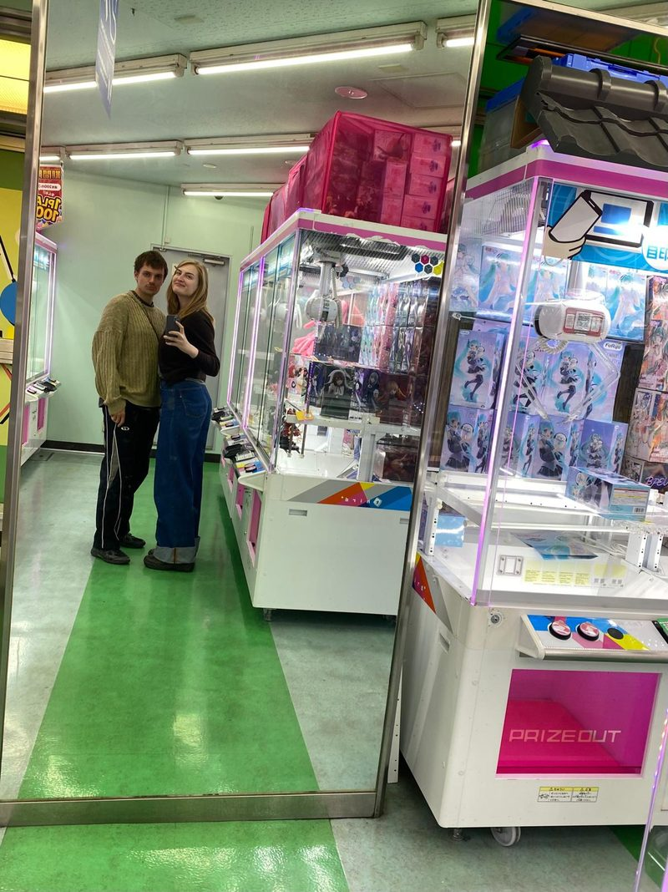
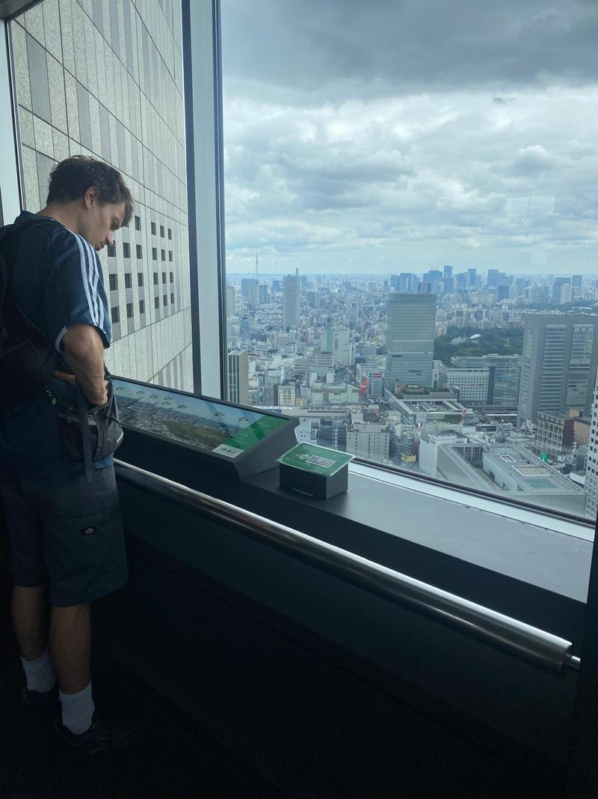
1000 gezichten
Natuurlijk klopt het dat we te gast zijn: buiten de uiterst beleefde restaurantbedienden krijgen we van niemand een blik van aandacht, interesse of toenadering. Ik wou dat de jonge vrouw tegenover ons in de metro, in wit overhemd en geruite rok, zou uitleggen hoe ze aan die slanke tenen komt, die bijna zo lang zijn als haar vingers, maar ze blijft glimlachend naar haar telefoon staren. Alleen in de richting van mijn voeten blijven veel ogen hangen; mogelijk betekent de kangoeroe van Australians hier iets duivels.
Op dag 1 eten we ramen en vallen we plat neer in onze kamer in het noordoosten van de stad, ingeklemd tussen een vaginaal stoombad en Good Wife: een van de schunnige rosse zaakjes met portiers in giletjes om klanten te trekken. Op dag 2 zijn we jet- en bedlegerig. Desondanks verplaatsen we ons naar Yanaka, het historische centrum van Tokyo met een wirwar van boeddhistische tempels. In het Uenopark komen we voor het groen en de markt, maar we stuiten op een evenement dat doet denken aan het jaarlijkse Japanfestival in het Stadshart van Amstelveen, maar dan niet Japans. Een podium met Spaanse reggaeton en Ierse volksmuziek, als hoofd aan tafel van allerlei witte Zuid-Amerikaanse eetkraampjes. Iets verderop vinden we balletjes en kaassticks.
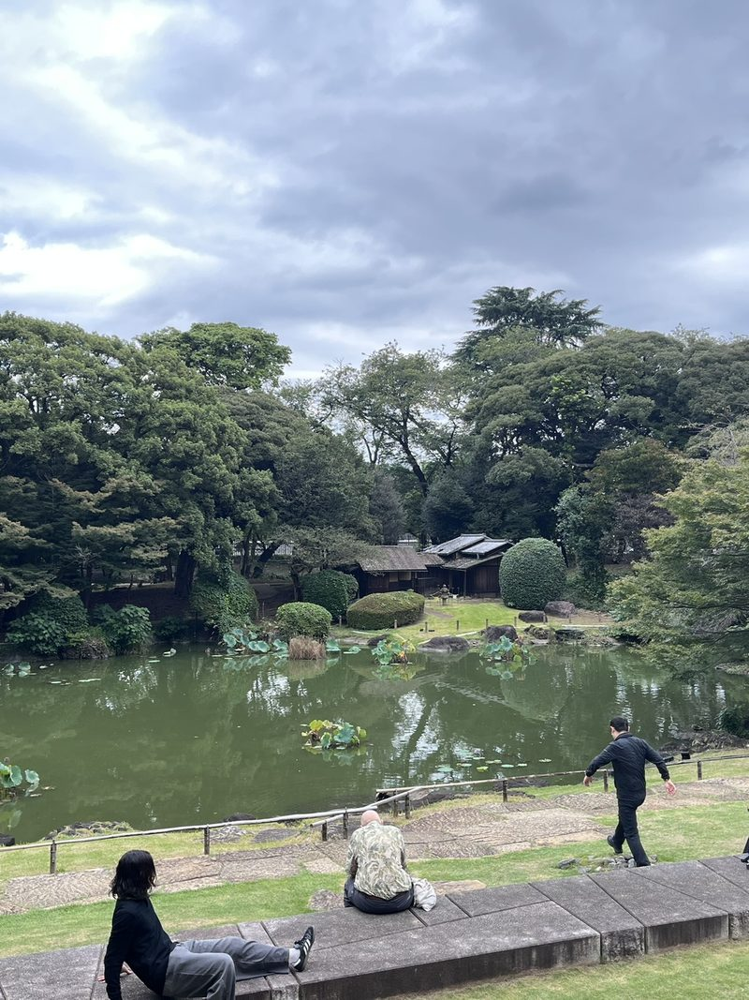
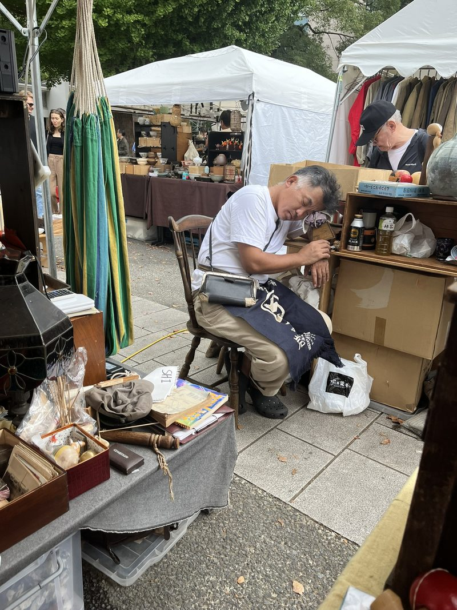
Telramen, eetstokjes, waaiers, stripverhalen, stokpoppen, beeldjes, theepotten, kimono's, maskers, tassen, servies, pokémonkaarten, spirituele beelden. De bekende Japanse tweede-, derde-, honderdstehands producten liggen uitgestald en zijn voor een dubbeltje op te halen, en toch durven we niets door onze handen te laten glijden. Uit de uitgekiende selectie straalt de esthetiek van het oude onbruikbare: 150 jaar oude foto's, buskaartjes, luciferdoosjes met erop geschilderde landschappen.
Bij het Nationaal Museum staan honderden kluisjes voor onze paraplu, mochten we die hebben, maar het is droog. De beelden en samuraizwaarden spreken op de een of andere manier voor zich. De maskers zijn ontworpen voor het nohtheater, waarbij de speler met minimale hoofdbewegingen van uitdrukking moet veranderen. De platen voor hun hoofd blijven ondertussen ongewijzigd en staan voor complexe emoties: een vrouw die gescheiden is van haar kind, of die in een slang is veranderd.
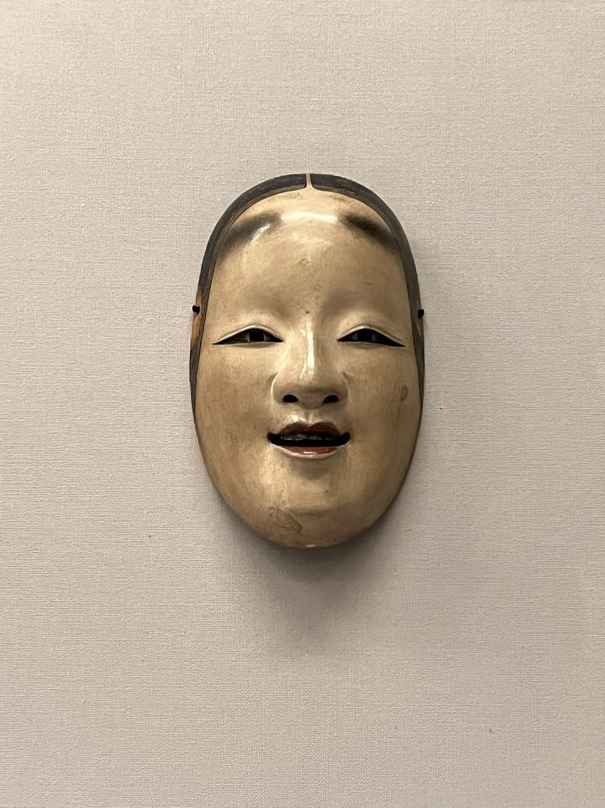
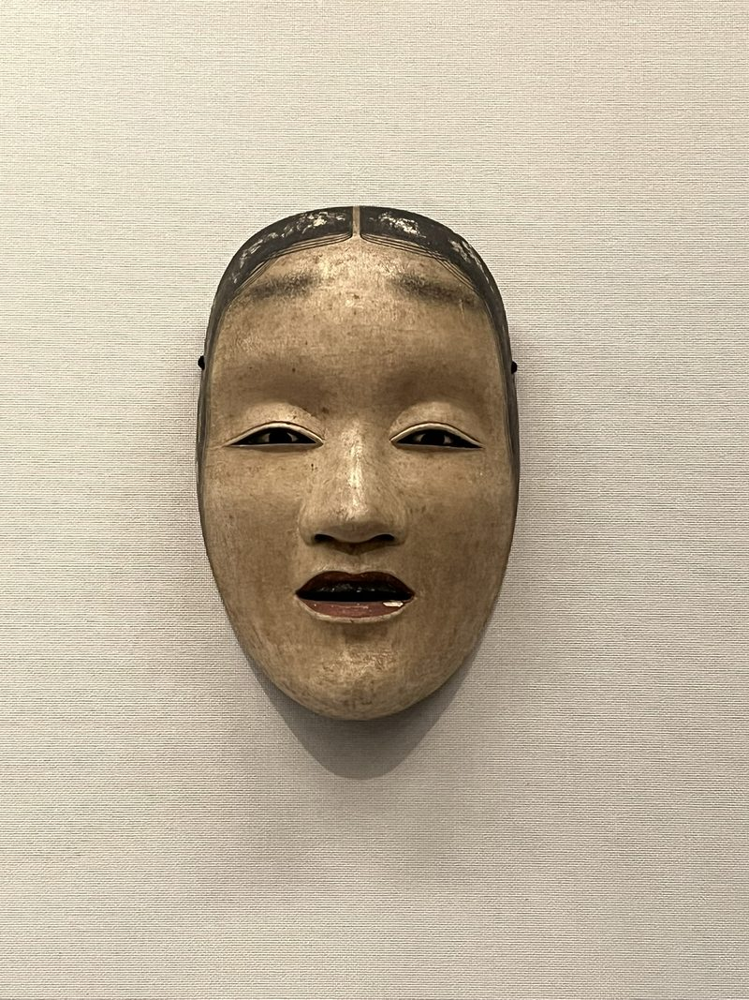
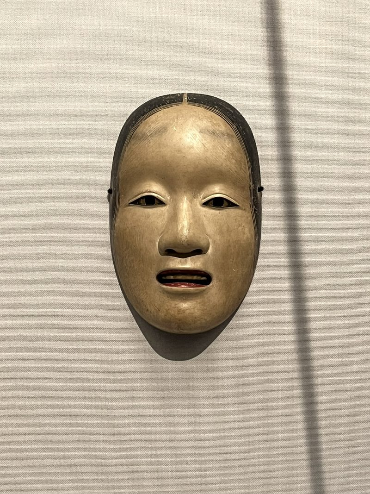
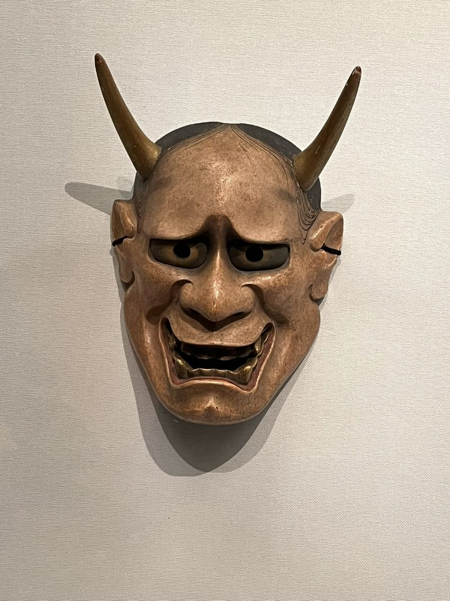
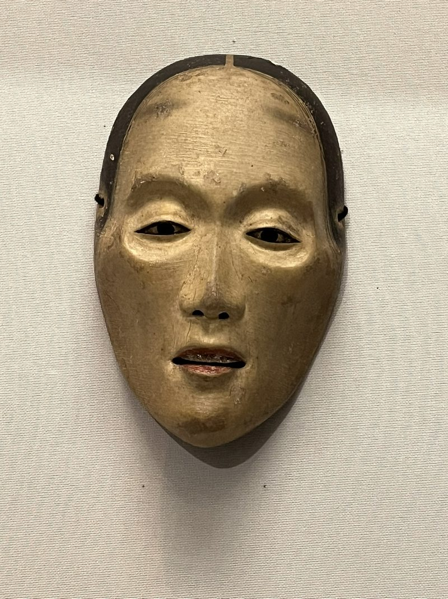
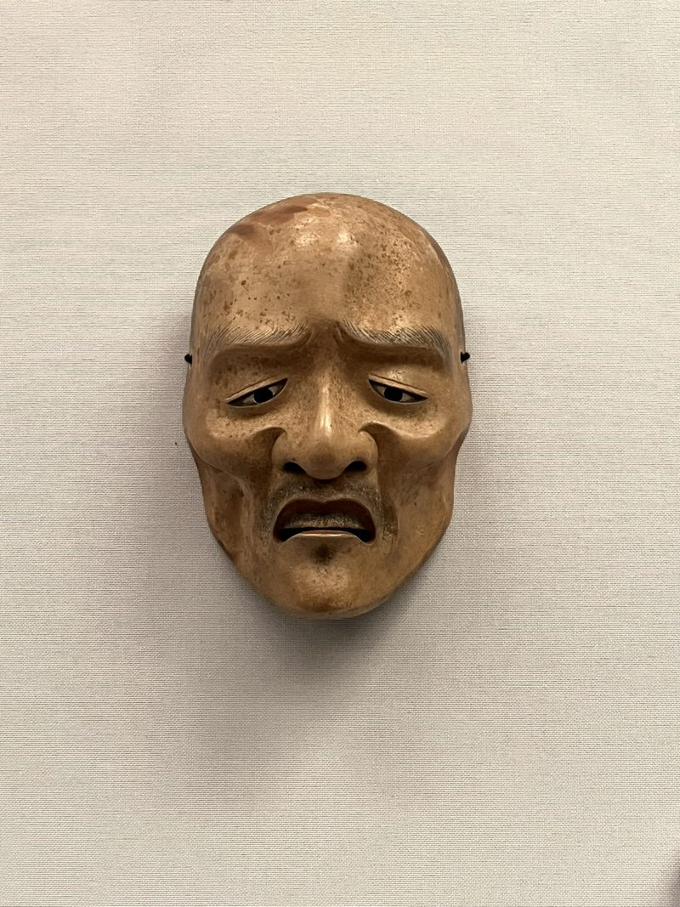
Hangen
Na een uurtje zijn we op, en in de schemering trek ik naar het buurtbadhuis. Ik loop langs de wasbakken met plukken zwart haar erin, kleed me uit en ga op een laag krukje zitten tussen mannen die van alles tot bijna op de grond laten hangen, tot ze een laag vuil van zich af hebben geboend. Ik ga veel te hard op de waterstralen die door het bubbelbad schieten en masseer mezelf bijna flauw in het gloeiende water. Bijkomen, zonder het gemechaniseerd wassende individu, op tuinstoelen met ventilatoren op de huid.
Over sanitair gesproken (al voelt het als een cliché om Japanse toiletten te beschrijven): geweldig. Openbaar, schoon en gratis. Op bordjes word ik eraan herinnerd er niet op te gaan staan. Naast straaltjes gemikt op gaten (bij E.L.K. nog geliefder dan bij mij) zijn er ook reinigers voor de bril, die verwarmd is.
Vroeger was geen prikkel me te veel. Nu krijg ik er al snel te veel binnen. We zijn dan ook een dag in de wijken Shinjuku en Shibuya, tussen de wolkenkrabbers waar duizenden forensen tegelijkertijd oversteken. Vanaf een regeringsgebouw kijken we, begeleid door een akoestische piano met Chopin en 'Let It Be', uit over de 33 miljoen inwoners. We zien het eindeloze grijs in gradaties van hoogte, de dichtbeboste longen van de stad en in onze verbeelding de zee daarachter: uitgestrekt blauw tot aan Rusland, Amerika en Indonesië. Eenmaal beneden lopen we door het groen, met gorilla's van kraaien die geluiden maken als kaketoes, en langs de massa's, met onder meer een groep meiden die, als poppetjes opgemaakt in animekleertjes, is samengekomen om plaatjes van K-popsterren uit te wisselen. Na een paar stappen in de Kalverstraat x 1000 met bombastische klassieke muziek houden we het voor gezien. Toch wagen we ons nog in de eveneens overprikkelende arcadehallen van vijf verdiepingen. E.L.K. vindt haar passie in het knallen op zombies en het grijpen naar knuffels. Zo verschaft ze zichzelf een item voor aan de rugtas, zoals de mode betaamt.
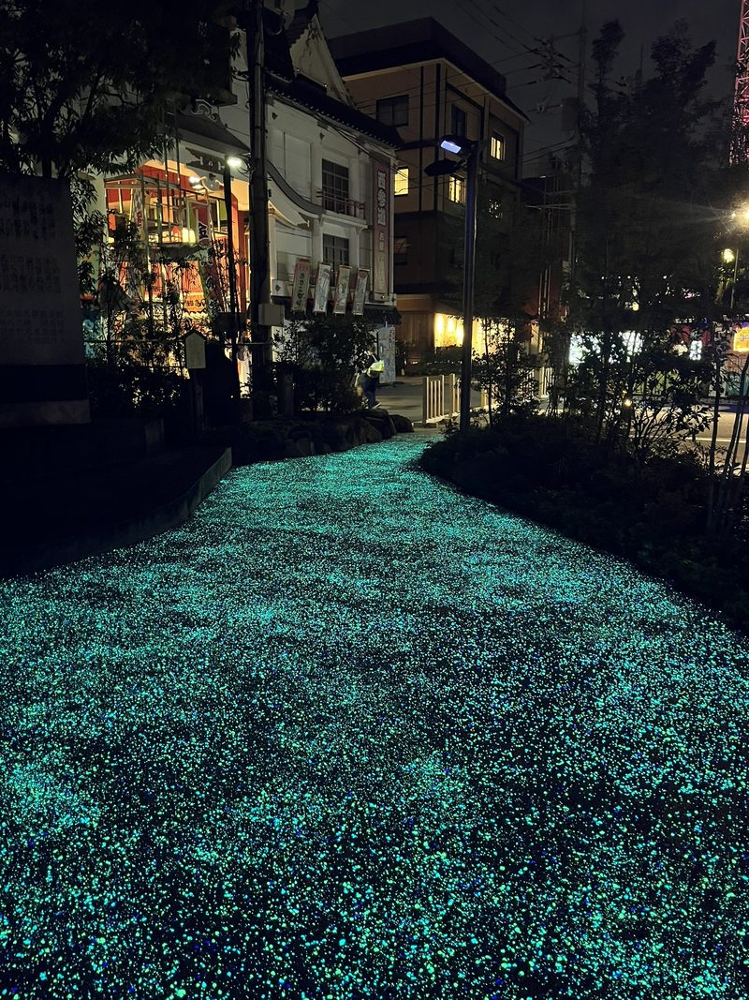
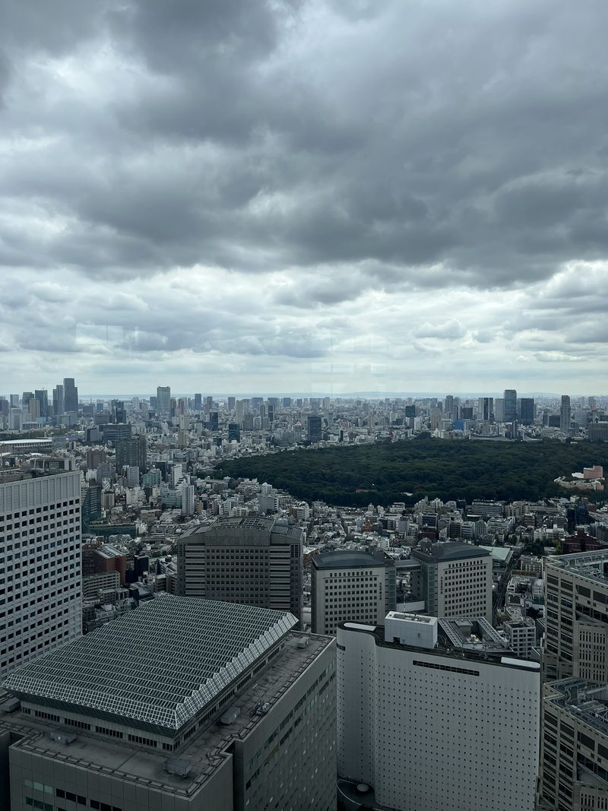
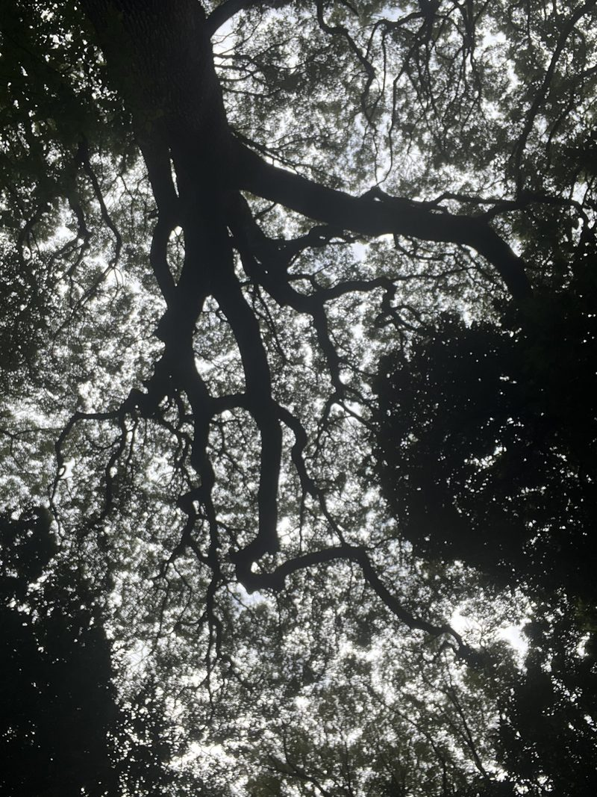
Op de laatste dag in de stad gaan we naar een aimabel hipsterwijkje, die vol zit van verborgen plekken. Via een brandtrap vinden we een café met drie uitstekende kernproducten – koffie, pasta, platen – en een wc in schemerlicht waar ik uren wil zitten. Een Coca-Cola-automaat blijkt een deur naar een bruin jazzcafé te zijn. Mijn nog altijd op hol geslagen darmen vliegen het toilet in, maar op het laatste moment besluit ik het doorspoelen te testen, waarna het hokje volledig overstroomt. De barman vliegt heen en weer tussen ontstoppen en cocktails maken zonder menukaart, en het rokerige sfeertje werkt verslavend, verzadigd als we al zijn door aankopen in het vintagewalhalla met onweerstaanbare afspeellijsten. Dit zou ook de curryhoofdstad zijn en we gaan ervoor, maar we krijgen voor de zoveelste keer noedelsoep. Het restaurant kenmerkt zich door een discobal, plastic platen over de tafels, experimentele muziek, lampionnen en een scherm voor bestellingen waarop de prijs maar blijft oplopen.
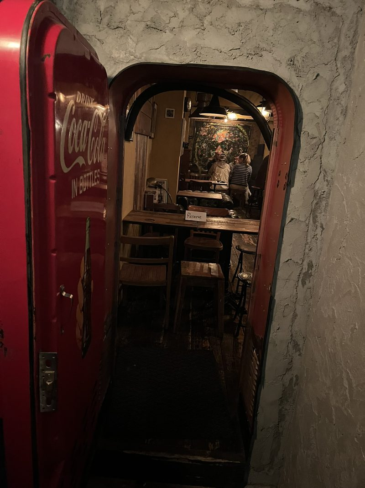
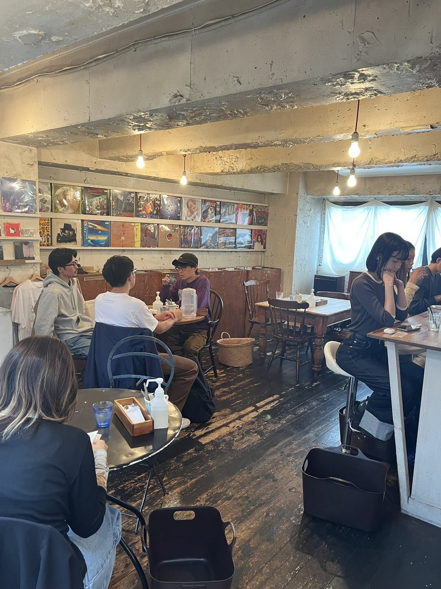
Nieuwe smaken
Het is me een stad. Overal plek voor een shrine, nergens ruimte voor nog een gebouw. Markten met minipaddenstoelen en aubergines, rauwe kastanjes en grote witte knollen. Schildpadjes in een bakje buiten bij een koffietentje, klaar om uit te kiezen. De wegen zijn waanzinnig druk, maar in een zijstraatje lijkt het zo weer rustig, met de o zo gedegen verkeersregelaars. Mensen zijn stil en houden hun oren open, met kleine fietsjes op de stoep. Het voelt veilig. Wel struggelen ze hier nog met het dragen van een mondkapje – want je wilt ook roken. Maar die lust ontgaat je in de daarvoor aangewezen hokken met donkergeel gekleurde airco en rookmelders.
We zijn verzadigd van nieuwe smaken – zoals green tea warabi-ijs met matcha-mochi, red bean bun, raw rice cracker – maar Tokyo blijft een gigantische metropool, en dus hóéft er niet continu Japans gegeten te worden, ondanks de gastronomische belofte. Zo deden we al een familierestaurant aan met gegratineerde uiensoep en een droge kipsalade met aardappeltjes. Olijfbrood en kaasbollen op het busstation, waar de balie een nagemaakte herfstboom is. Hier stappen we op, richting dé berg: ruimte.